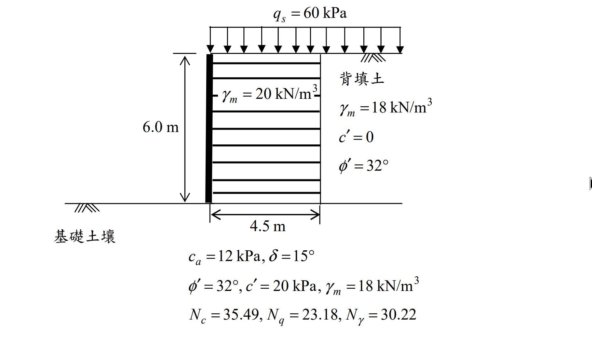
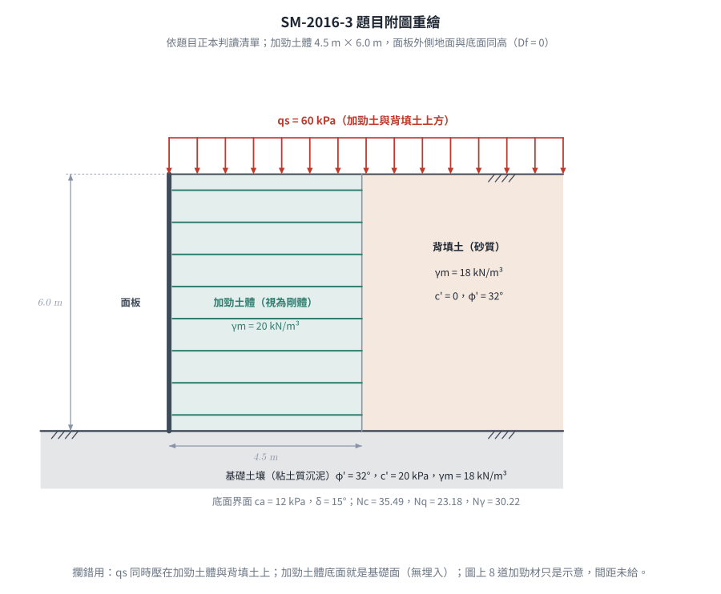
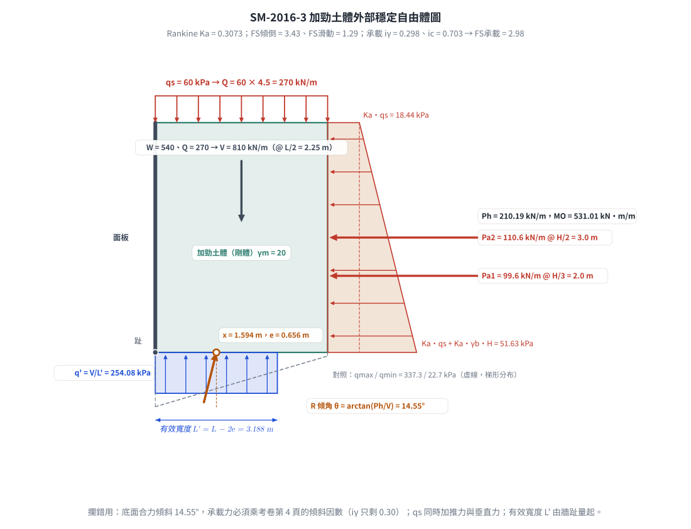

📄 題目正本：考卷原文・附圖・判讀清單（已確認）
SM-2016-3 題目正本
本檔只記錄考卷上寫了什麼、圖上畫了什麼，不含任何解法。解析見同資料夾
SM-2016-3.md。
判讀清單已確認（凍結）；本檔原則上不再修改（改動須回考卷原圖並記 log）。
| 項目 | 內容 |
|---|---|
| 考卷 | raw/exams/SM-2016_土壤力學與基礎設計.pdf 第 2 頁，第三題；第 4 頁「參考資料」 |
| 考年 | 民國 105 年（2016） |
| 配分 | 25 分（㈠12、㈡8、㈢5） |
| 附圖 | SM-2016-3-fig-1.png（加勁擋土牆剖面＋參數；既有證據圖，完整無雜訊，沿用） |
| 判讀狀態 | 已確認（2026-11-15 關卡一：使用者授權依建議判讀確認；轉錄 2026-11-15；PyMuPDF 110 dpi 全頁目視，附圖 400 dpi 局部放大；盲讀後才比對既有解析） |
1. 考卷原文（逐字）
三、下圖所示為直立 6.0 m 高加勁擋土牆，加勁材埋入深度為 4.5 m，假設加勁土壤視為一剛體，單位重 $\gamma_m = 20$ kN/m³，背填土壤為砂質土壤，單位重為 18 kN/m³，背填土有效剪力強度參數 $\phi' = 32^\circ$、$c' = 0$；此背填土及加勁土體座落於某粘土質沉泥基礎土壤上，其與加勁土體間界面的剪力強度參數 $c_a = 12$ kPa、$\delta = 15^\circ$，基礎土壤之有效剪力強度參數 $\phi' = 32^\circ$、$c' = 20$ kPa，單位重 $\gamma_m = 18$ kN/m³，加勁土與背填土上方承受 $q_s = 60$ kPa 均佈荷載。
㈠試分析此加勁擋土牆之抗傾倒、抗滑安全係數為何與是否適宜？如不適宜，建議補救措施為何？（12 分）
㈡請分析此加勁土體基礎承載力安全係數為何與是否適宜？如不適宜，建議補救措施為何？（8 分）
㈢請說明加勁擋土牆系統設計與施工注意事項。（5 分）
（「粘土質沉泥」照考卷原文。）
2. 考卷給的公式、附表與參數
- 加勁土體：高 6.0 m、加勁材埋入深度 4.5 m，視為剛體，$\gamma_m$ = 20 kN/m³。
- 背填土：砂質土壤，$\gamma_m$ = 18 kN/m³，$\phi'$ = 32°，$c'$ = 0。
- 加勁土體與基礎土壤界面：$c_a$ = 12 kPa，$\delta$ = 15°。
- 基礎土壤（粘土質沉泥）：$\phi'$ = 32°，$c'$ = 20 kPa，$\gamma_m$ = 18 kN/m³；圖下另給 $N_c$ = 35.49、$N_q$ = 23.18、$N_\gamma$ = 30.22。
- 均佈荷載：$q_s$ = 60 kPa，作用於加勁土與背填土上方。
第 4 頁「參考資料：形狀、深度與傾斜修正因數關係式」（考卷未標屬於哪一題；第三、四題都問基礎承載力）：
| 項目 | 凝聚力 ($c$) | 超載 ($q$) | 土重 ($\gamma$) |
|---|---|---|---|
| 形狀 ($s$) | $1+\left(\dfrac{B}{L}\right)\left(\dfrac{N_q}{N_c}\right)$ | $1+\left(\dfrac{B}{L}\right)\tan\phi'$ | $1-0.4\left(\dfrac{B}{L}\right)$ |
| 深度 ($d$) | $1+0.4\left(\dfrac{D_f}{B}\right)$ | $1+2\tan\phi'(1-\sin\phi')^2\dfrac{D_f}{B}$ | 1.0 |
| 傾斜 ($i$) | $\left(1-\dfrac{\theta}{90^\circ}\right)^2$ | $\left(1-\dfrac{\theta}{90^\circ}\right)^2$ | $\left(1-\dfrac{\theta}{\phi'}\right)^2$ |
備註：$\theta$ = 基礎荷載對垂直面之傾斜角。（同頁「註」另印庫倫與 Mononobe–Okabe 主動土壓力係數，屬第四題指定用式，見 SM-2016-4-problem.md。）
- 沒有給：土壓力理論（Rankine 或 Coulomb）、背填土與加勁土體界面摩擦角、面板厚度與重量、加勁材間距與強度、安全係數要求值、地下水位、承載力公式本體。
- 卷首注意事項：㈠可以使用電子計算器。㈡不必抄題，作答時請將試題題號及答案依照順序寫在試卷上，於本試題上作答者，不予計分。（本年卷首只有這兩項。）
3. 附圖

圖面文字照錄：qs = 60 kPa、6.0 m、γm = 20 kN/m³、背填土、γm = 18 kN/m³、c' = 0、φ' = 32°、4.5 m、基礎土壤、ca = 12 kPa, δ = 15°、φ' = 32°, c' = 20 kPa, γm = 18 kN/m³、Nc = 35.49, Nq = 23.18, Nγ = 30.22。
4. 判讀清單
| # | 項目 | 判讀 | 圖上／題文依據 | 把握 |
|---|---|---|---|---|
| 1 | 背填土壓力理論 | 考卷未指定，也未給背填土與加勁土體界面摩擦角。建議：加勁土體背面鉛直、背填土面水平 → 用 Rankine 主動土壓力（界面摩擦不計） | 題文 | 不確定（影響答案）；使用者授權依建議確認 |
| 2 | 加勁土體上方的 $q_s$ | 題文明寫 $q_s$ 作用於「加勁土與背填土上方」，未區分活載或靜載。建議：主線計入加勁土體上方 $q_s$ 的垂直力與抵抗力矩，另以不計（活載保守做法）對照 | 題文；圖上箭頭由面板頂畫到背填土上方 | 不確定（影響答案）；使用者授權依建議確認 |
| 3 | 加勁土體尺寸 | 寬 4.5 m（尺寸界線對齊面板外緣與加勁區右端鉛直線）、高 6.0 m（尺寸線上端對齊頂面、下端對齊地面線） | 附圖 400 dpi | 確定 |
| 4 | 面板 | 左側粗黑實線為牆面板，厚度、重量未給 | 附圖 | 確定（解讀） |
| 5 | 加勁材 | 圖上 8 道水平線，長度到 4.5 m 處；間距、強度未給（題目指定視為剛體） | 附圖＋題文 | 確定 |
| 6 | 背填土 | 位於加勁區右側，地表水平並與加勁土體頂面同高；$\gamma_m$ = 18、$\phi'$ = 32°、$c'$ = 0 | 附圖 | 確定 |
| 7 | 基礎與底面高程 | 加勁土體與背填土都座落在基礎土壤上；面板外側地面線與加勁土體底面同高 → 埋入深度 $D_f$ = 0 | 附圖地面線與剖線 | 確定 |
| 8 | 底面界面 | 加勁土體底面與基礎土壤：$c_a$ = 12 kPa、$\delta$ = 15° | 題文＋圖下參數 | 確定 |
| 9 | 承載力參數 | 基礎土壤 $\phi'$ = 32°、$c'$ = 20 kPa、$\gamma$ = 18；$N_c$、$N_q$、$N_\gamma$ 已給 | 圖下參數 | 確定 |
| 10 | 參考資料表 | 第 4 頁形狀、深度、傾斜修正因數表未標題號，第三、四題都問承載力 → 適用於本題㈡ | 第 4 頁 | 確定（解讀） |
| 11 | 基礎長度 | 沿牆長方向連續（條狀，按每延米分析） | 剖面圖 | 確定（解讀） |
| 12 | 所求 | ㈠抗傾倒、抗滑安全係數＋是否適宜＋補救；㈡基礎承載力安全係數＋是否適宜＋補救；㈢設計與施工注意事項 | 題文 | 確定 |
| 13 | 考卷沒有給 | 土壓力理論、背填土—加勁土體界面摩擦角、安全係數要求值、地下水位（未提及，視為無水）、面板重 | 全題 | 確定 |
轉錄：2026-11-15（SM-U3-2 題目正本推廣・批 1）
確認：2026-11-15 使用者授權依建議判讀確認（SM-U3-2 題目正本推廣・批 1，關卡一；使用者指示「要確認的依你建議」）
考題編號：SM-2016-3
主分類： SM-U3-2 擋土結構物穩定分析
副分類： SM-U2-1 淺基礎之支承力與沉陷量、SM-U3-1 側向土壓力理論
分析法： 有效應力法
標籤： 加勁擋土結構 抗滑動 抗傾覆 承載力檢核 偏心距 Rankine主動土壓力 超載重 傾斜修正因數 有效寬度
1. 題目（考卷原文見題目正本）
考卷原文、公式／附表、附圖與判讀清單（已確認）見
SM-2016-3-problem.md。本節只列解題時最容易讀錯的地方與本解使用的記號；題意以題目正本為準。

重繪自考卷附圖，依題目正本判讀清單 #2–#9；8 道加勁材僅示意。攔下的判讀錯誤：qs 同時壓在加勁土體與背填土上；加勁土體底面就是基礎面（$D_f$ = 0）。
常見誤讀
| 項目 | 正確判讀 | 常見誤讀 |
|---|---|---|
| 土壓力理論 | 考卷未指定 → Rankine，加勁土體背面鉛直、界面摩擦不計（題目正本 #1，已確認） | 自設界面摩擦角改用 Coulomb |
| $q_s$ 作用範圍 | 加勁土體與背填土上方都有；主線計入加勁土體上方 $q_s$ 的垂直力與抵抗力矩，另以不計對照（#2，已確認） | 只算背填土上 $q_s$ 的推力、漏掉加勁區上的垂直力 |
| 埋入深度 | 面板外側地面與加勁土體底面同高，$D_f$ = 0（#7） | 計入牆前被動土 |
| 參考資料表 | 第 4 頁形狀、深度、傾斜修正因數表未標題號，也適用於本題㈡（#10）；條狀 $B/L$ = 0、$D_f$ = 0 → 形狀、深度因數皆為 1，只剩傾斜因數 | 以為只給第四題用，承載力不做傾斜修正（本解 2026-11-15 前即如此，$FS_{BC}$ 高估為 6.21，實為 2.98） |
| 單位重符號 | 考卷三種土都記 $\gamma_m$：加勁土 20、背填土 18、基礎土 18（題目正本 §2） | 混用加勁土與背填土的單位重 |
本解記號： $\gamma_b$ 背填土單位重（考卷記 $\gamma_m$ = 18）；$\gamma_f$ 基礎土壤單位重（考卷記 $\gamma_m$ = 18）；$L$ 加勁土體寬 4.5 m；$L'$ 有效寬度；$K_a$ 主動土壓力係數；$P_h$ 水平推力；$V$ 總垂直力。
2. 考題核心精神與出題者意圖 (Core Concepts & Examiner's Intent)
本題測驗考生對於加勁擋土牆外部穩定分析 (External Stability) 的熟練度。
出題者期望考生將加勁土體視為一整體剛性區塊，計算背填土與超載重所造成之主動側向土壓力與傾覆力矩，並評估該剛體之抗滑、抗傾覆與承載能力。本題陷阱在於均佈超載重 $q_s$ 同時作用於「加勁土」與「背填土」上方，因此在計算驅動力時會產生側向推力，在計算抵抗力時亦會增加加勁體的正向垂直荷重，不可遺漏。第二個陷阱在㈡：加勁土體底面同時承受垂直力與很大的水平推力，合力傾斜約 14.5°，考卷第 4 頁的傾斜修正因數表正是為此而給，漏用會讓承載力高估一倍以上。
3. 解題戰略地圖與陷阱分析 (Strategic Roadmap & Trap Analysis)
- 主動土壓力與推力計算：利用 Rankine 理論求得背填土之 $K_a$。計算土壤自重及均佈超載所產生之側向推力 $P_h$ 與傾覆力矩 $M_O$。
- 抗滑與抗傾倒檢核：加總垂直荷重 $V$（包含加勁土重與上方超載）。利用底部界面參數 $(c_a, \delta)$ 計算抗滑力，求出 $FS_{SL}$ 與 $FS_{OT}$。
- 承載力檢核：由於合力偏心，利用合力矩與總垂直力求出偏心距 $e$。採用 Meyerhof 有效寬度法 $L' = L - 2e$ 求出基礎底面等值均佈應力 $q'_{max}$，並以此寬度及考卷第 4 頁的傾斜修正因數（荷載傾角 $\theta = \tan^{-1}(P_h/V)$）計算極限承載力 $q_{ult}$，進而求出 $FS_{BC}$。
- 改善措施與注意事項：針對未達標的安全係數提出實務對策（如增加加勁長度、深埋等），並補充設計與施工之通則。
3.5 變數層次分析 (Variable Hierarchy Analysis)
最終目標
計算加勁擋土牆之抗滑、抗傾覆與基礎承載力安全係數，並針對不足項目提出改善對策。
本題關鍵公式（依計算順序）
- Step 1 主動土壓力係數：$K_a = \tan^2(45^\circ - \frac{\phi_b'}{2})$
- Step 2 水平推力：$P_h = \frac{1}{2}\boxed{K_a} \gamma_b H^2 + \boxed{K_a} q_s H$
- Step 3 傾覆力矩：$M_O = (\frac{1}{2}\boxed{K_a} \gamma_b H^2)\frac{H}{3} + (\boxed{K_a} q_s H)\frac{H}{2}$
- Step 4 總垂直力：$V = \gamma_m H L + q_s L$
- Step 5 穩定安全係數：$FS_{SL} = \frac{c_a L + \boxed{V} \tan\delta}{\boxed{P_h}}$, $FS_{OT} = \frac{\boxed{V}(L/2)}{\boxed{M_O}}$
- Step 6 合力偏心距與有效寬度：$e = \frac{L}{2} - \frac{\boxed{V}(L/2) - \boxed{M_O}}{\boxed{V}}$, $L' = L - 2\boxed{e}$
- Step 7 荷載傾角與傾斜因數：$\theta = \tan^{-1}(\boxed{P_h}/\boxed{V})$, $i_c = (1-\theta/90^\circ)^2$, $i_\gamma = (1-\theta/\phi_f')^2$
- Step 8 承載力安全係數：$q_{ult} = c_f' N_c \boxed{i_c} + \frac{1}{2} \gamma_f \boxed{L'} N_\gamma \boxed{i_\gamma}$, $FS_{BC} = \frac{\boxed{q_{ult}}}{\boxed{V}/\boxed{L'}}$
L1：題目直接給定
| 符號 | 數值 | 說明 |
|---|---|---|
| $H$ | 6.0 m | 加勁擋土牆高度 |
| $L$ | 4.5 m | 加勁材埋入深度（加勁體寬度） |
| $\gamma_m$ | 20 kN/m³ | 加勁土壤單位重 |
| $q_s$ | 60 kPa | 地表均佈超載重 |
| $\gamma_b$ | 18 kN/m³ | 背填土壤單位重 |
| $\phi_b'$ | 32° | 背填土有效內摩擦角 |
| $c_a$ | 12 kPa | 底部界面凝聚力 |
| $\delta$ | 15° | 底部界面摩擦角 |
| $c_f'$ | 20 kPa | 基礎土有效凝聚力 |
| $\phi_f'$ | 32° | 基礎土有效內摩擦角（傾斜因數 $i_\gamma$ 用） |
| $\gamma_f$ | 18 kN/m³ | 基礎土單位重 |
| $N_c, N_q, N_\gamma$ | 35.49, 23.18, 30.22 | 基礎土之 Meyerhof 承載力係數 |
| 修正因數表 | 考卷第 4 頁 | 形狀、深度、傾斜修正因數；本題只有傾斜因數 ≠ 1 |
L2：需知識點推導
外部水平推力與傾覆力矩
| 符號 | 公式／來源 | 卡關? |
|---|---|---|
| $K_a$ | $\tan^2(45^\circ - \phi_b'/2)$ | |
| $P_h$ | $P_{a1} + P_{a2} = 0.5K_a\gamma_b H^2 + K_a q_s H$ | |
| $M_O$ | $P_{a1}(H/3) + P_{a2}(H/2)$ | |
抗滑與抗傾覆分析
| 符號 | 公式／來源 | 卡關? |
|---|---|---|
| $V$ | $\gamma_m H L + q_s L$ | |
| $FS_{SL}$ | $(c_a L + V \tan\delta) / P_h$ | |
| $FS_{OT}$ | $(V \times L/2) / M_O$ | |
承載力分析 (Meyerhof 有效寬度法)
| 符號 | 公式／來源 | 卡關? |
|---|---|---|
| $e$ | $L/2 - (M_R - M_O)/V$ | |
| $L'$ | $L - 2e$ | |
| $q'_{max}$ | $V / L'$ | |
| $\theta$ | $\tan^{-1}(P_h/V)$，荷載對垂直面之傾斜角 | |
| $i_c$, $i_\gamma$ | $(1-\theta/90^\circ)^2$, $(1-\theta/\phi_f')^2$（考卷第 4 頁） | |
| $q_{ult}$ | $c_f' N_c i_c + 0.5 \gamma_f L' N_\gamma i_\gamma$ | |
| $FS_{BC}$ | $q_{ult} / q'_{max}$ | |
L3：深層知識（不懂就卡住）
| 知識點 | 說明 | 卡關? |
|---|---|---|
| 剛體假設 | 加勁擋土牆外部穩定分析時，將加勁區 $(H \times L)$ 視為一完整剛體 | |
| 有效寬度法 | 承受偏心載重之基礎，應以 Meyerhof 有效寬度 $B' = B - 2e$ 計算極限承載力，並以 $q'_{max} = V/B'$ 檢核 | |
| 傾斜荷載 | 擋土結構底面合力必然傾斜；$i_\gamma = (1-\theta/\phi')^2$ 對傾角非常敏感（本題 $\theta$ = 14.5° 就使 $i_\gamma$ = 0.30），不修正會嚴重高估承載力 | |
| 超載重之影響 | 均佈超載 $q_s$ 同時增加主動推力 (不利) 以及垂直正向力 (有利)，計算抵抗力矩與摩擦力時須包含之 |
4. 步驟化詳細計算過程 (Step-by-Step Detailed Calculation)
(一) 抗傾倒與抗滑安全係數分析
1. 主動土壓力與驅動力矩
背填土主動土壓力係數：
$$ K_a = \tan^2\left(45^\circ - \frac{32^\circ}{2}\right) = \tan^2(29^\circ) = 0.3073 $$
作用於加勁體後方之水平驅動力 $P_h$ 分為土壤自重與超載兩部分：
-
土壤自重推力：$P_{a1} = \frac{1}{2} K_a \gamma_b H^2 = \frac{1}{2} \times 0.3073 \times 18 \times 6.0^2 = 99.56 \text{ kN/m}$
（作用於距牆底 $H/3 = 2.0 \text{ m}$ 處） -
超載重推力：$P_{a2} = K_a q_s H = 0.3073 \times 60 \times 6.0 = 110.63 \text{ kN/m}$
（作用於距牆底 $H/2 = 3.0 \text{ m}$ 處）
總驅動水平力：
$$ P_h = P_{a1} + P_{a2} = 99.56 + 110.63 = 210.19 \text{ kN/m} $$
傾覆力矩 $M_O$ (對牆趾取矩)：
$$ M_O = 99.56 \times 2.0 + 110.63 \times 3.0 = 199.12 + 331.89 = 531.01 \text{ kN-m/m} $$
2. 垂直荷重與抵抗力矩
加勁土體上方亦承受超載重，故總垂直力 $V$ 包含加勁土重與超載重：
$$ V = W_{soil} + W_{sur} = (\gamma_m \times H \times L) + (q_s \times L) $$
$$ V = (20 \times 6.0 \times 4.5) + (60 \times 4.5) = 540 + 270 = 810 \text{ kN/m} $$
抵抗力矩 $M_R$ (重心位於 $L/2 = 2.25 \text{ m}$ 處)：
$$ M_R = V \times \frac{L}{2} = 810 \times 2.25 = 1822.50 \text{ kN-m/m} $$
3. 抗傾覆安全係數 $(FS_{OT})$
$$ FS_{OT} = \frac{M_R}{M_O} = \frac{1822.50}{531.01} = \boxed{3.43} $$
評估： $FS_{OT} = 3.43 \ge 2.0$，抗傾覆適宜 (安全)。
4. 抗滑安全係數 $(FS_{SL})$
依據給定之加勁土與基礎土間界面參數 $(c_a = 12 \text{ kPa}, \delta = 15^\circ)$：
抗滑力 $F_R = c_a L + V \tan\delta$
$$ F_R = 12 \times 4.5 + 810 \times \tan(15^\circ) = 54 + 810 \times 0.2679 = 54 + 217.00 = 271.00 \text{ kN/m} $$
$$ FS_{SL} = \frac{F_R}{P_h} = \frac{271.00}{210.19} = \boxed{1.29} $$
評估： $FS_{SL} = 1.29 < 1.5$，抗滑不適宜 (不安全)。
抗滑補救措施建議：
- 增加加勁材長度 $L$：可同時增加結構自重 $V$ 與底部摩擦面積，有效提升抗滑力。
- 牆底設置抗滑榫 (Shear Key)：藉由抗滑榫伸入基礎土層中以激發被動土壓力抵抗滑動。
- 增加牆基埋置深度：增加牆趾前方之被動土壓力抗力。
- 地盤改良：置換或改良底部土壤，提高界面摩擦參數 $c_a, \delta$。
(二) 基礎承載力安全係數分析
1. 偏心距與有效寬度
合力作用點至牆趾距離 $x = \frac{M_R - M_O}{V} = \frac{1822.50 - 531.01}{810} = \frac{1291.49}{810} = 1.594 \text{ m} $
偏心距 $e = \frac{L}{2} - x = 2.25 - 1.594 = 0.656 \text{ m} $
檢核：$e = 0.656 \text{ m} < \frac{L}{6} = 0.75 \text{ m}$，底面無拉應力。
Meyerhof 有效寬度 $L'$：
$$ L' = L - 2e = 4.5 - 2 \times 0.656 = 3.188 \text{ m} $$
2. 等值最大承載壓力 $(q'_{max})$
$$ q'_{max} = \frac{V}{L'} = \frac{810}{3.188} = 254.08 \text{ kPa} $$
3. 荷載傾角與修正因數
底面合力同時有垂直分量 $V$ 與水平分量 $P_h$，其對垂直面之傾斜角：
$$ \theta = \tan^{-1}\left(\frac{P_h}{V}\right) = \tan^{-1}\left(\frac{210.19}{810}\right) = 14.55^\circ $$
依考卷第 4 頁「形狀、深度與傾斜修正因數關係式」：條狀基礎 $B/L \to 0$ → 形狀因數皆為 1；$D_f = 0$ → 深度因數皆為 1；傾斜因數：
$$ i_c = \left(1 - \frac{\theta}{90^\circ}\right)^2 = \left(1 - \frac{14.55}{90}\right)^2 = 0.703 $$
$$ i_\gamma = \left(1 - \frac{\theta}{\phi_f'}\right)^2 = \left(1 - \frac{14.55}{32}\right)^2 = 0.298 $$
4. 極限承載力 $(q_{ult})$
採用 Meyerhof 理論，無埋置深度 $(D_f = 0, q=0)$，$N_q$ 項為 0：
$$ q_{ult} = c_f' N_c i_c + \frac{1}{2} \gamma_f L' N_\gamma i_\gamma $$
代入已知參數 ($c_f' = 20 \text{ kPa}, \gamma_f = 18 \text{ kN/m}^3, N_c = 35.49, N_\gamma = 30.22$)：
$$ q_{ult} = 20 \times 35.49 \times 0.703 + \frac{1}{2} \times 18 \times 3.188 \times 30.22 \times 0.298 $$
$$ q_{ult} = 498.91 + 258.06 = 756.97 \text{ kPa} $$
5. 承載力安全係數 $(FS_{BC})$
$$ FS_{BC} = \frac{q_{ult}}{q'_{max}} = \frac{756.97}{254.08} = \boxed{2.98} $$
（等價寫法：極限承載力合力 $q_{ult}L' = 2414.0$ kN/m 與 $V = 810$ kN/m 之比，同為 2.98。）

圖 2 外部穩定自由體圖。攔下本題原解的錯誤：底面合力傾斜 14.55°，承載力必須乘考卷第 4 頁的傾斜因數（$i_\gamma$ 只剩 0.298）；另攔 $q_s$ 只算推力、漏算加勁區上的垂直力，以及有效寬度量錯起點。
評估： 依現行「建築物基礎構造設計規範」，擋土牆基礎支承力安全係數須符合淺基礎規定（長期載重 3.0），$FS_{BC} = 2.98 < 3.0$，基礎承載力略為不足（不適宜）。
承載力補救措施建議：
- 加長加勁材 $L$：同時降低偏心比 $e/L$ 與荷載傾角 $\theta$，有效寬度 $L'$ 增大；本題 $L$ 只要加到約 4.52 m 即可使 $FS_{BC} \ge 3.0$，但抗滑要求 $L \ge$ 約 5.24 m（㈠），兩者一併考量取 $L \approx 5.3$ m 以上。
- 增加埋置深度 $D_f$：引入 $q N_q$ 項與深度因數，承載力提高明顯。
- 基礎土壤改良或置換：置換為級配良好之粒料並分層夯實、或灌漿改良，提高 $c'$、$\phi'$。
- 降低水平推力：背填改用輕質或高摩擦角填料、加強背填排水，減小 $P_h$ 即同時減小 $\theta$ 與 $e$。
(三) 加勁擋土牆系統設計與施工注意事項
設計注意事項：
- 內部穩定分析 (Internal Stability)：必須詳細檢核加勁材之「抗拉斷」及「抗拔出」安全係數，確保各層加勁材配置之長度、間距與抗拉強度充足。
- 外部與整體穩定 (External & Overall Stability)：除上述抗滑、傾覆與承載力外，遇坡地或軟弱地層時，必須執行整體圓弧滑動破壞之穩定性分析。
- 排水系統設計 (Drainage Design)：背填土區與加勁區後方應設置良好之排水設施 (如透水盲溝、排水管)，防止水壓累積而增加牆背推力並降低土壤強度。
施工注意事項：
- 填土材料與夯實 (Backfill & Compaction)：應選用排水性佳、級配良好之粒料作為加勁區與背填區土壤，並分層均勻滾壓至規定之壓實度。
- 面版保護與重機管制 (Facing Protection)：壓路機等大型夯實機具應與面版保持適當距離 (通常 $>1\text{m}$)，近面版處應改用小型夯實設備，以免推擠面版造成線形不平整或結構損壞。
- 加勁材敷設 (Reinforcement Installation)：加勁材鋪設時應保持平整並適度拉緊，確保與面版接合處穩固無鬆脫，再行覆土壓實。
5. 關鍵爭議點與進階探討 (Critical Issues & Advanced Discussion)
- 超載重之考量：在台灣考題中，通常未特別區分超載重為活載重 (Live Load) 或靜載重 (Dead Load)，皆直接全數計入驅動力與抵抗力之計算。若考題特別聲明 $q_s$ 為活載重，則在進行保守設計時，計算抵抗傾覆力矩與底部摩擦力時會忽略作用於加勁區上方之活載重（即 $V$ 不計 $q_s \times L$），但推力計算仍包含其造成之主動土壓力。本解析依據常規考題慣例，將其視為均佈常設荷載全數列入。
- 傾斜修正因數（本題㈡的關鍵）：考卷第 4 頁的修正因數表未標題號，但第三、四題都問基礎承載力，且加勁土體底面合力傾斜 14.55°，傾斜修正必須做。不修正時 $q_{ult} = 1577.2$ kPa、$FS_{BC} = 6.21$（本解 2026-11-15 前的答案），高估一倍以上，結論也由「略不足」變成「非常安全」。$i_\gamma = (1-\theta/\phi')^2$ 對傾角特別敏感，是擋土結構承載力檢核最常漏的一項。
- 安全係數要求值的依據：現行「建築物基礎構造設計規範」第 7 章擋土牆：滑動長期 1.5／地震 1.2、傾覆長期 2.0／地震 1.5，基礎支承力安全係數依淺基礎章節（長期 3.0／地震 2.0）。條號依營建署公開之第 7 章條文（7.4.1–7.4.3）；112 年修正版條號是否變動未逐條核對原文。加勁擋土牆若依 FHWA／AASHTO 慣用值（承載 2.5），本題 2.98 則可接受——作答時寫明所依標準。
- 承載力計算方法：傳統做法可能採用偏心應力公式 $q_{max} = \frac{V}{L}(1+\frac{6e}{L}) = 337.3$ kPa 配合原寬度計算 $FS = q_{ult}/q_{max} = 2.24$，但對於加勁擋土牆，現行主流設計規範（如 AASHTO、FHWA）強烈建議採用 Meyerhof 有效寬度法 ($L' = L - 2e$) 計算極限承載力，這更能真實反映基底應力集中之破壞模式，也是本解析採用的方法。
修正日期：2026-11-15（§1 改為指向題目正本 SM-2016-3-problem.md，重繪附圖 figs/SM-2016-3-fig-1-problem.svg；§4 補解題圖解 figs/SM-2016-3-fig-2-fbd.svg；非勘誤）
修正日期：2026-11-15（FIX：承載力補傾斜修正因數——㈡ $q_{ult}$ 1576.71 → 756.97 kPa、$FS_{BC}$ 6.21 → 2.98，結論由「適宜（非常安全）」改為「略不足（< 3.0）」並補承載力補救措施；原解漏用考卷第 4 頁形狀、深度與傾斜修正因數表（題目正本 #10）。§1 常見誤讀、§2、§3、§3.5、§4（二）、§5 同步；安全係數要求值改註現行建築物基礎構造設計規範。驗證：腳本重算 26 個數值 MISMATCHES: 0，$FS_{BC}$ 以 $q_{ult}/(V/L')$ 與 $q_{ult}L'/V$ 雙路徑一致；依 2026-11-15 獨立盲解比對）